ちいさな遊園地 — Blenderから実アプリへ
人形と6種類の遊具をBlenderで立体化し、同じカメラから書き出した透過素材で組み直した実画面です。アプリを開く · 検証記録
候補 park-resin-blender-v1 / 配信 build-play-v1 / DEV flag=true / revision 4102126-park-resin-088562a6cc48。公開環境への反映は含みません。最終美術承認と独立した子ども観察は未実施。
見本・立体・本番素材の再合成
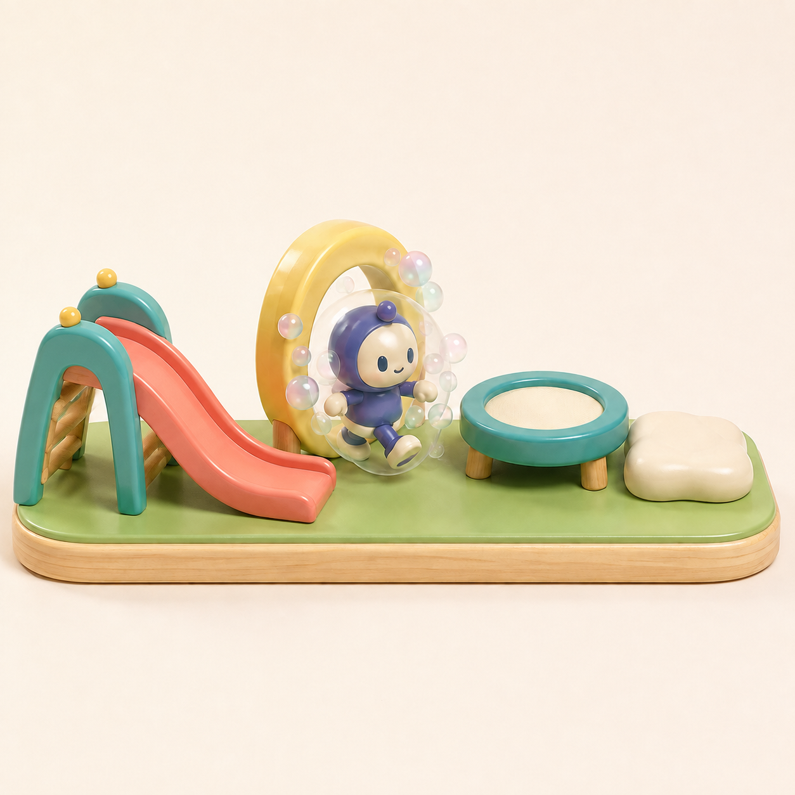
生成見本B。作業の色・顔・質感の基準。
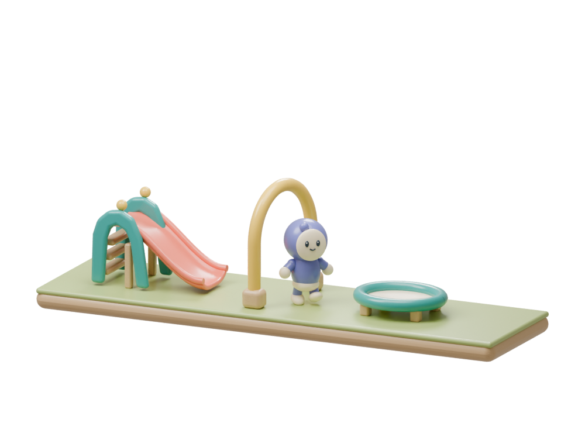
編集可能な同じBlenderモデル。通路が成立するようゲート下端を開いた。
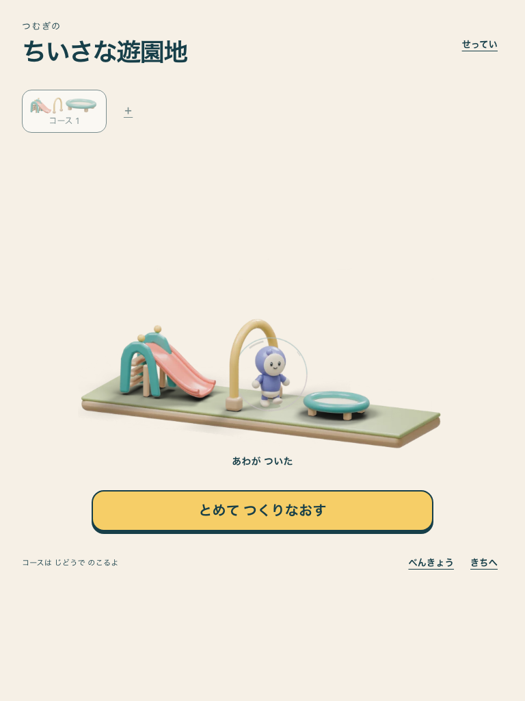
実アプリの分割素材で再合成。390px / 768pxで確認。
同じ部品を並べ替える
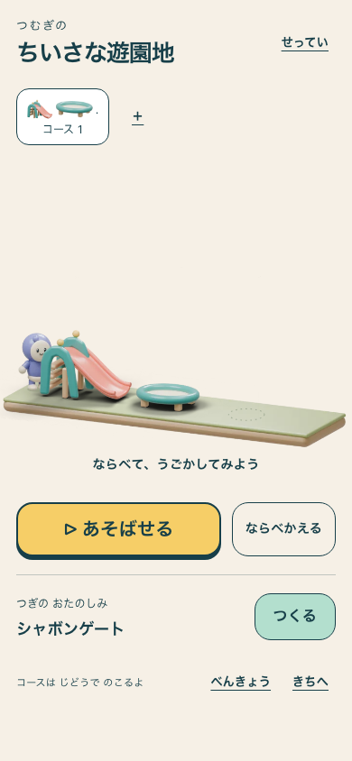
A：すべり台 → トランポリン → 空き。
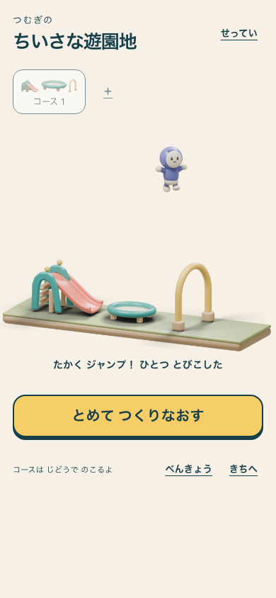
B：ゲートを飛び越す。泡は付かない。
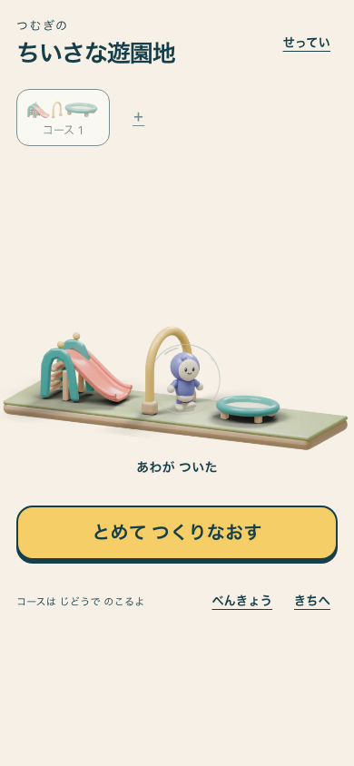
C：地上でゲートを通り、泡が付く。
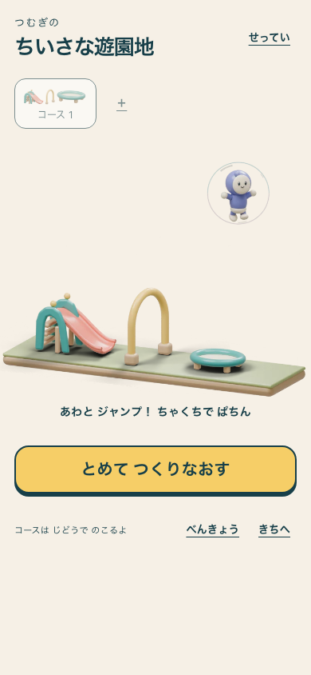
C：泡のまま跳ぶ。
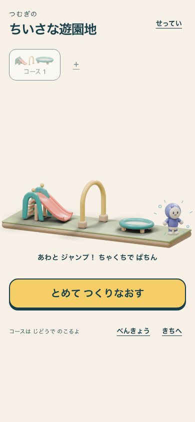
C：台座に着地して、ぱちん。
制作・学習・再開も同じ素材で
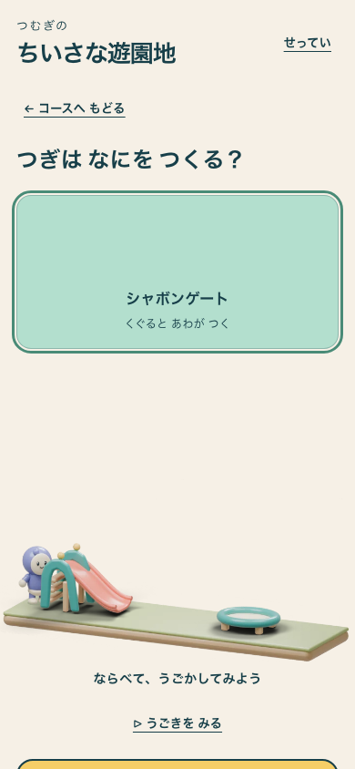
次の部品を選び、動きを見る。
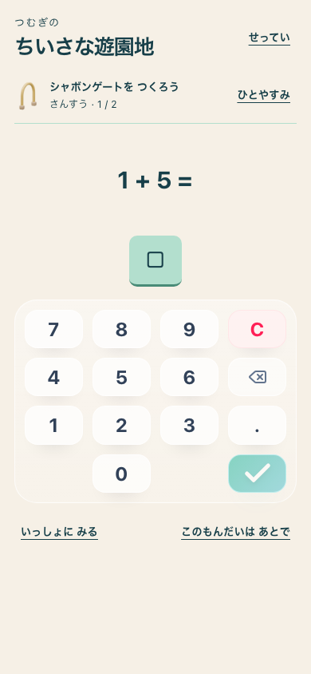
学習中は舞台を止める。入力UIは既存のまま。
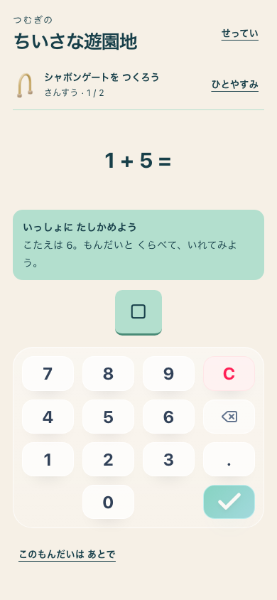
支援を開き、reload後も同じ問題を続ける。
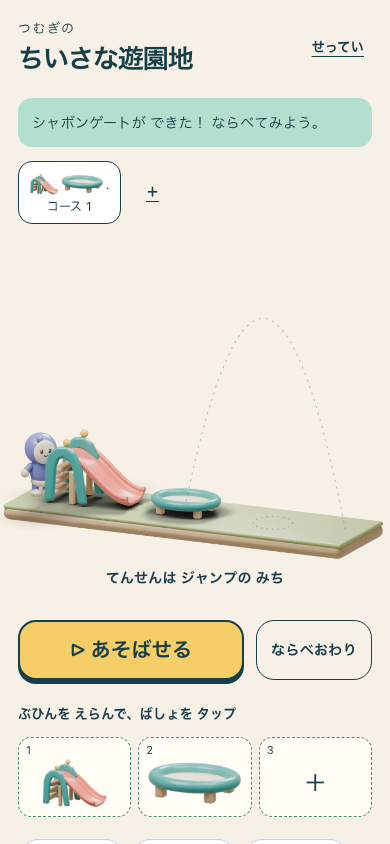
完成した部品を配置する。
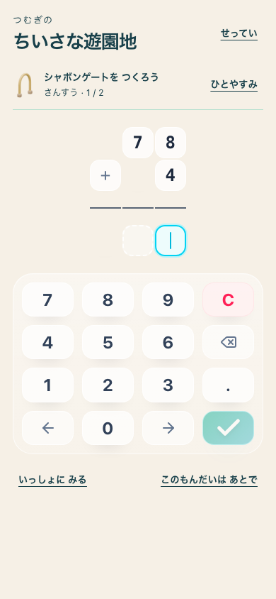
筆算も同じ入力・保存契約。
6位置でも人形を小さくしない
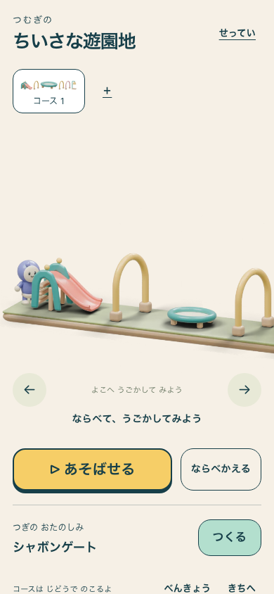
左側。3位置と同じ約64pxの人形。
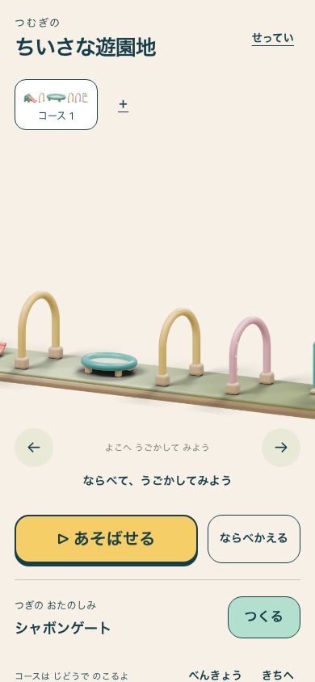
左右ボタンとスワイプで見渡す。
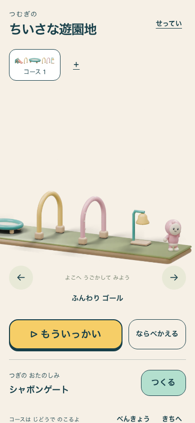
ペイント後のピンクの人形。足元まで画面内に着地。
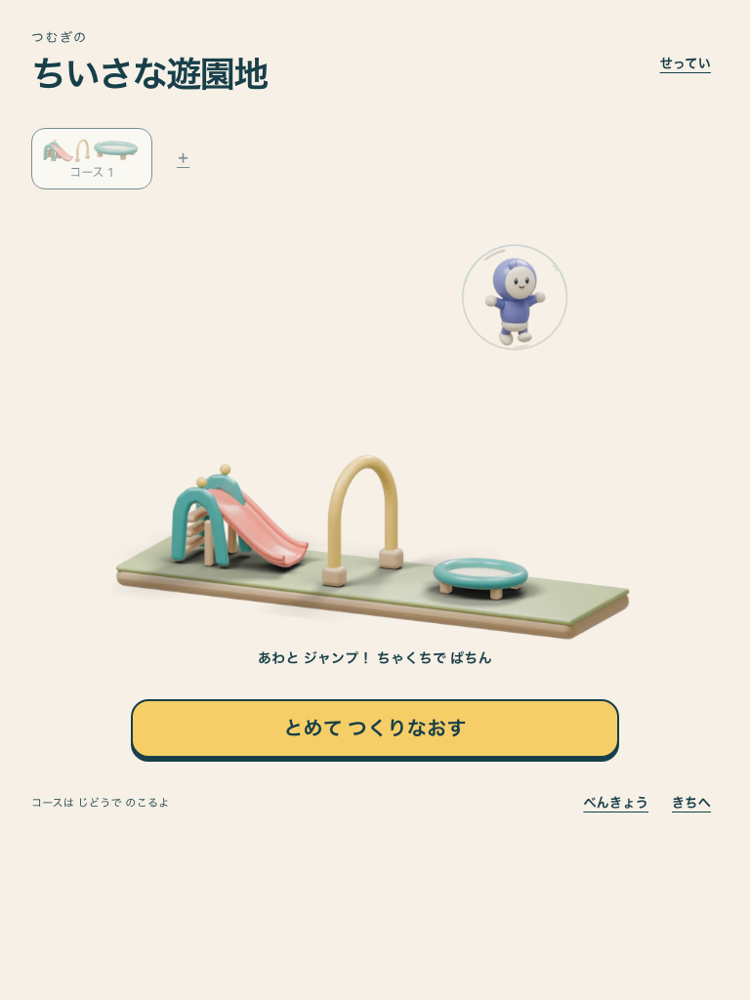
タブレットでも泡と人形全体を表示。
実画面の再演
無音の記録。B/C比較から6位置の最後の着地まで、アプリの再演をそのまま収録。